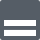
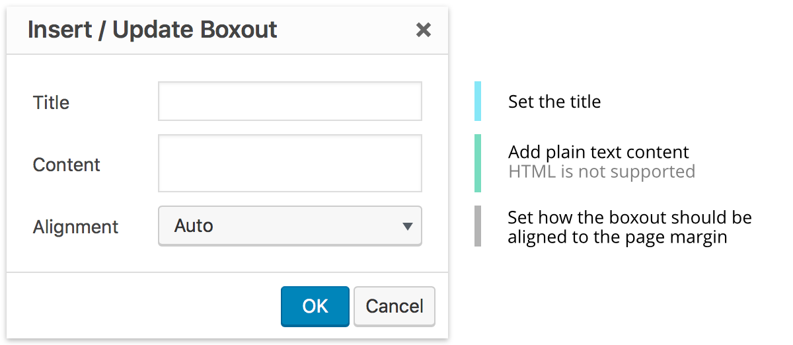

Boxouts group multiple action links or buttons together, with some brief explanatory text.
Design
Boxouts are implemented with the class cl-boxout
<div class="cl-boxout">
<h1>Title</h1>
<p>Paragraph text with a <a>link</a>.</p>
<a class="cl-button">Button</a>
<a class="cl-button">Button</a>
...
</div>
Here's a title
Boxouts can contain little snippets of text, or full-fledged paragraphs.
Here's some text with an inline link.
Click me
Another Button
Shortcode Support
Boxouts can be implemented with the shortcode cl-boxout
[cl-boxout title="A Great Title"]The body text, html, or other shortcodes[/cl-boxout]
The boxout shortcode supports nested shortcodes, which makes adding buttons easy.
[cl-boxout title="A Great Title"]The body text. [cl-button ...][/cl-boxout]
Attributes
title (string) (optional)
The text for a title
(default value: none)
float (string) (optional) (values: 'left', 'right')
Set to float the boxout either left or right
(default value: none)
class (string) (optional)
Set custom CSS class(es)
(default value: none)
WYSIWYG Editor Support
With the WYSIWYG plugin installed, boxouts can be added using the WYSIWYG editor.
The icon  to add a boxout appears in the WYSIWYG toolbar. Clicking this icon opens a dialogue where different boxout attributes can be easily set.

The completed boxout will appear fully styled in the editor window. To edit it, simply double-click the boxout to reopen the editor dialogue.